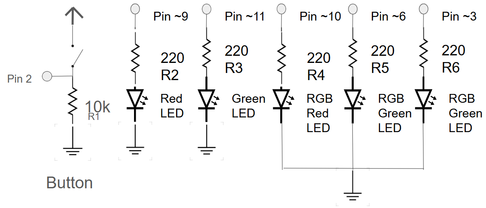
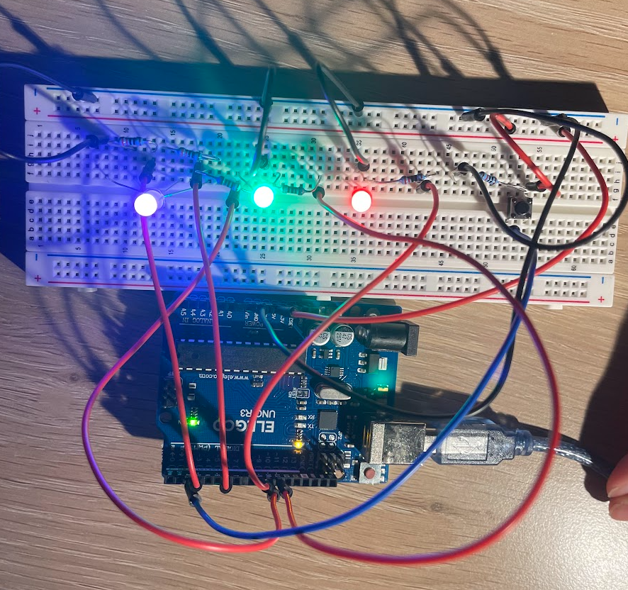
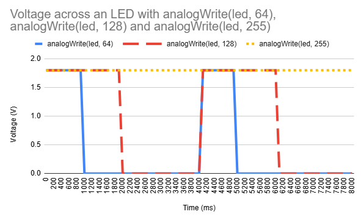

Here is all the documentation for assignment 2! Fade! will fade on 2 LED and 1 RGB LED light in sequence at the push of a button.
Here is a picture of the schematic used in Fade!
To calculate the resistor value for each LED, I used Ohm's Law. Each LED is 20mA (0.02A), and the Arduino gives 5 volts so:
Button:
V = 5V
R =
I =
For the button I used
Red LED:
Red Voltage drop: 1.8V
V = 5V - 1.8V = 3.2V
I = 20mA = 0.02A
R = V / I = 3.2V / 0.02A = 160Ω
Green LED:
Green Voltage drop: 1.8V
V = 5V - 1.8V = 3.2V
I = 20mA = 0.02A
R = V / I = 3.2V / 0.02A = 160Ω
I used a 220Ω resistor for the green and red LEDs because it was the closest value to 160Ω. Using a higher resistor dimmed the LED.
RBG LED:
Red Voltage drop: 1.8V
V = 5V - 1.8V = 3.2V
I = 20mA = 0.02A
R = V / I = 3.2V / 0.02A = 160Ω
Blue Voltage drop: 3.3V
V = 5V - 3.3V = 1.7V
I = 20mA = 0.02A
R = V / I = 1.7V / 0.02A = 85Ω
Green Voltage drop: 1.8V
V = 5V - 1.8V = 3.2V
I = 20mA = 0.02A
R = V / I = 3.2V / 0.02A = 160Ω
I used a 220Ω resistor for each leg of the RBG LED.
Here is a picture of the circuit used in Fade!
Here is a GIF of Fade! in action

Here is the code used for Fade!
// A2 Fade!
// This code will fade on a red LED, green LED, and RGB LED (purple) when the button is pressed
// Sets and initalizes the variable buttonState to 0
int buttonState = 0;
// Sets and initalizes the variable G to 11
int G = 11;
// Sets and initalizes the variable R to 9
int R = 9;
// Sets and initalizes the variable multi to 10
int multi = 10;
// Use the setup function to initalize the outputs and inputs of the pins
void setup() {
// Sets the pin associated with R (pin 9) as an output pin
pinMode(R, OUTPUT);
// Sets the pin associated with G (pin 11) as an output pin
pinMode(G, OUTPUT);
// Sets the pin associated with multi (pin 10) as an output pin
pinMode(multi, OUTPUT);
// Sets the pin 2 as an input pin
pinMode(2, INPUT);
}
// Creates a loop
void loop (){
// Reads the state (HIGH or LOW) of pin 2 and stores the value as buttonState
buttonState = digitalRead(2);
// Begins an if else statement: will run the code underneath if the state of pin 2 is HIGH/ if the button is pressed
if (buttonState == HIGH) {
// RED LED
// Begins a for loop: initializes the variable i as 0 then increases the value of i by one until it reaches 255 resulting in a gradual increase of i.
for(int i = 0; i < 256;i++){
// Takes R or pin 9 and increases the brightness gradually according to i
analogWrite(R, i);
// Hold that state for 5 miliseconds
delay(5);
// End of for loop
}
// GREEN LED
// Begins a for loop: initializes the variable i as 0 then increases the value of i by one until it reaches 255 resulting in a gradual increase of i.
for(int i = 0; i < 256;i++){
// Takes G or pin 11 and increases the brightness gradually according to i
analogWrite(G, i);
// Hold that state for 5 miliseconds
delay(5);
// End of for loop
}
// RGB LED
// Begins a for loop: initializes the variable i as 0 then increases the value of i by one until it reaches 255 resulting in a gradual increase of i.
for(int i = 0; i < 256;i++){
// Takes multi or pin 10 and increases the brightness gradually according to i, resulting in an increase in the red led of the RGB LED
analogWrite(multi, i);
// Takes pin 3 and increases the brightness gradually according to i, resulting in an increase in the blue led of the RGB LED to create purple
analogWrite(3,i);
// Hold that state for 5 miliseconds
delay(5);
// End of for loop
}
// End of if else statement: if the buttonState or pin 2 reads as LOW/ button is not pressed do not turn on any LEDs
} else {
// Turns off R or pin 9 LED
digitalWrite(R,LOW);
// Turns off G or pin 11 LED
digitalWrite(G,LOW);
// Turns off multi or pin 10 LED
digitalWrite(multi,LOW);
// Turns off pin 3 LED
digitalWrite(3,LOW);
// End of for loop
}
// End of the loop
}
Additional Questions
Question 1: Draw a chart where the X axis is time and the Y axis is voltage. Draw 3 lines representing the voltage across an LED with analogWrite(led, 64), analogWrite(led, 128), and analogWrite(led,255)
analogWrite(led, 64): Represents a PWM signal with a 25% duty cycle.
analogWrite(led, 128): Represents a PWM signal with a 50% duty cycle.
analogWrite(led, 255): Represents a PWM signal with a 100% duty cycle.

Question 2:Given your schematic, circuit, and firmware, assuming the only thing that draws current is your LEDs, how long would your circuit run if powered by a 1200 mAh battery?
If 1200 mAh means that circuit consuming 1200 mA can run for 1 hour then we need to find the amount of current my circuit is drawing.
T = 1200 mAh / Drawn Current
To find drawn current we can use Ohm's Law
I = V/R
V = 5V
R = total resistance sum = 1/R(total) = 1/R1 + 1/R2 + 1/R3 + 1/R4 + 1/R5 + 1/R6
R1 = 10,000Ω
R2 = 220Ω
R3 = 220Ω
R4 = 220Ω
R5 = 220Ω
R6 = 220Ω
1/R(total) = 1/10,000Ω + (1/220Ω) * 5 = 0.022827 or 57/2500
Take the reciprocal of 57/2500 is 2500/57
R = 2500/57 or about 43.85Ω
Now
I = 5V/ 43.85Ω = 0.11399 A or 114 mA
T = 1200 mAH / 114 mA = 10.5 hours